| Masahiko Haruno* | Satoshi Shirai+ | Yoshifumi Ooyama+ |
| mharuno@hip.atr.co.jp | shirai@cslab.kecl.ntt.co.jp | ooyama@cslab.kecl.ntt.co.jp |
This paper describes novel and practical Japanese parsers that uses decision trees. First, we construct a single decision tree to estimate modification probabilities; how one phrase tends to modify another. Next, we introduce a boosting algorithm in which several decision trees are constructed and then. combined for probability estimation. The two constructed parsers are evaluated by using the EDR Japanese annotated corpus. The single-tree method outperforms the conventional Japanese stochastic methods by 4%. Moreover, the boosting version is shown to have significant advantages; 1) better parsing accuracy than its single-tree counterpart for any amount of training data and 2) no over-fitting to data for various iterations.
Conventional parsers with practical levels of performance require a number of sophisticated rules that have to be hand-crafted by human linguists. It is time-consuming and cumbersome to maintain these rules for two reasons.
The stochastic approach, on the other hand, has the potential to overcollIe these difficulties. Because it induces stochastic rules to maximize overall performance against training data, it not only adapts to any application domain but also may avoid over-fitting to the data. In the late 80s and early 90s, the induction and parameter estimation of probabilistic context free grammars (PCFGs) from corpora were intensivelv studied. Because these grammars comprise only nonterminal and part-of-speech tag symbols, their performances were not enough to be used in practical applications (Charniak, 1993). A broader range of information, in particular lexical information, was found to be essential in disambiguating the syntactic structures of real-world sentences. SPATTER (Magerman, 1995) augmented the pure PCFG by introducing a number of lexical attributes. The parser controlled applications of each rule by using the lexical constraints induced by decision tree algorithm (Quinlan, 1993). The SPATTER parser attained 87% accuracv and first made stochastic parsers a practical choice. The other type of high-precision parser, which is based on dependency analysis was introduced by Collins (Collins, 1996). Dependency analysis first segments a sentence into syntactically meaningful sequences of words and then considers the modification of each segment. Collins' parser computes the likelihood that each segment modifies the other (2 term relation) by using large corpora. These modification probabilities are conditioned by head words of two segments, distance between the two segments and other syntactic features. Although these two parsers have shown similar performance, the keys of their success are slightly different. SPATTER parser performance greatly depends on the feature selection ability of the decision tree algorithm rather than its linguistic representation. On the other hand, dependency analysis plays an essential role in Collins' parser for efficiently extracting information from corpora.
In this paper, we describe practical Japanese dependency parsers that uses decision trees. In the Japanese language, dependency analysis has been shown to be powerful because sement (bunsetsu) order in a sentence is relatively free compared to European languages. Japanese dependency parsers generally proceed in three steps.
| 1. | Segment a sentence into a sequence of bunsetsu. | ||
| 2. | Prepare a modification matrix, each value of which represents how one bunsetsu is likely to modify another. | ||
| 3. | Find optimal modifIcations in a sentence by a dynamic programming technique. |
The most difficult part is the second; how to construct a sophisticated modification matrix. With conventional Japanese parsers, the linguist must classify the bunsetsu and select appropriate features to compute modification values. The parsers thus suffer from application domain diversity and the side effects of specific rules.
Stochastic dependency parsers like Collins', on the other hand, define a set of attributes for conditioning the modification probabilities. The parsers consider all of the attributes regardless of bunsetsu type. These methods can encompass only a small number of features if the probabilities are to be precisely evaluated from finite number of data. Our decision tree method constructs a more sophisticated modification matrix. It automatically selects a sufficient number of significant attributes according to bunsetsu type. We can use arbitrary numbers of the attributes which potentially increase parsing accuracy.
Natural languages are full of exceptional and collocational expressions. It is difficult for machine learning algorithms, as well as hulnan linguists, to judge whether a specific rule is relevant in terms of overall performance. To tackle this problem, we test the mixture of sequentially generated decision trees. Specifically, we use the Ada-Boost algorithm (Freund and Schapire, 1996) which iteratively performs two procedures: 1. construct a decision tree based on the current data distribution and 2. updating the distribution by focusing on data that are not well predicted by the constructed tree. The final modification probabilities are computed by mixing all the decision trees according to their performance. The sequential decision trees gradually change from broad coverage to specific exceptional trees that cannot be captured by a single general tree. In other words, the method incorporates not only general expressions but also infrequent specific ones.
The rest of the paper is constructed as follows. Section 2 summarizes dependency analysis for the Japanese language. Section 3 explains our decision tree models that compute modification probabilities. Section 4 then presents experimental results obtained by using EDR Japanese annotated corpora. Finally, section 5 concludes the paper.
This section overviews dependency analysis in the Japanese language. The parser generally performs the following three steps.
| 1. | Segment a sentence into a sequence of bunsetsu. | ||
| 2. | Prepare modification matrix each value of which represents how one bunsetsu is likely to modify the other. | ||
| 3. | Find optimal modifications in a sentence by a dynamic programming technique. |
Because there are no explicit delimiters between words in Japanese, input sentences are first word segmented, part-of-speech tagged, and then chunked into a sequence of bunsetsus. The first step yields, for the following example, the sequence of bunsetsu displayed below. The parenthesis in the Japanese expressions represent the intemal structures of the bunsetsu (word segmentations).
Example:
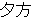

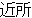
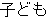


| (()()) | (()()) | (()()) |
(()()) | (()()) | (()() | |
| kinou-no | yuugata-ni | kinjo-no | kodomo-ga | wain-wo | nomu+ta | |
| yesterday-NO | evening-NI | neighbor-NO | children-GA | wine-WO | drink+PAST |
The second step of parsing is to construct a modification matrix whose values represent the likelihood that one bunsetsu modifies another in a sentence. In the Japanese language, we usually make two assumptions:
| 1. | Every bunsetsu except the last one modifies only one posterior bunsetsu. | ||
| 2. | No modification crosses to other modifications in a sentence. |
Table 1 illustrates a modification matrix for the example sentence. In the matrix, columns and rows represent anterior and posterior bunsetsus. respectively. For example, the first bunsetsu 'kinou- no' modifies the second 'yuugata-ni' with score 0.70 and the third 'kinjo-no' with score 0.07. The aim of this paper is to generate a modification matrix by using decision trees.
| kinou-no | |||||
| yuugata-ni | 0.70 | yuugata-ni | |||
| kinjo-no | 0.07 | 0.10 | kinjo-no | ||
| kodomo-ga | 0.10 | 0.10 | 0.70 | kodomo-ga | |
| wain-wo | 0.10 | 0.10 | 0.20 | 0.05 | wain-wo |
| nomu-ta | 0.03 | 0.70 | 0.10 | 0.95 | 1.00 |
The final step of parsing optimizes the entire dependency structure by using the values in the modification matrix.
Before going into our model, we introduce the notations that will be used in the model. Let S be the input sentence. S comprises a bunsetsu set B of length m ( { < b1,fl > , ... , < bm,fm > } ) in which bi and fi represent the ith bunsetsu and its features, respectively. We define D to be a modification set; D = {mod(1), ... , mod(m-1)} in which mod(i) indicates the number of busetsu modified by the ith bunsetsu. Because of the first assumption, the length of D is always m-1. Using these notations, the result of the third step for the example can be given as D = {2, 6, 4, 6, 6} as displayed in Figure 1.
| ||||||||||||||||||||||||||||||||||||||||||||||||||||||||||||||||||||||||||||||||||||||||||||||||||||||||||||||||||||||||||||||||||||||||||
The stochastic dependency parser assigns the most plausible modification set Dbest to a sentence S in terms of the training data distribution.
Dbest = argmaxD P(D|S) = argmaxD P(D|B)
By assuming the independence of modifications, P(D|B) can be transformed as follows. P (yes |bi , bj , f1 , ... , fm ) means the probability that a pair of bunsetsu bi and bj have a modification relation. Note that each modification is constrained by all features{f1 , ... , fm } in a sentence despite of the assumption of independence. We use decision trees to dynamically select appropriate features for each combination of bunsetsus from {f1 , ... , fm } .
P (D |B ) = mi =1P (yes |bi , bj , f1 , ... , fm )
Let us first consider the single tree case. The training data for the decision tree comprise any unordered combination of two bunsetsu in a sentence. Features used for learning are the linguistic information associated with the two bunsetsu. The next section will explain these features in detail. The class set for learning has binary values yes and no which delineate whether the data (the two bunstsu) has a modification relation or not. In this setting, the decision tree algorithm automatically and consecutively selects the significant features for discriminating modify/non-modify relations.
We slightly changed C4.5 (Quinlan, 1993) programs to be able to extract class frequencies at every node in the decision tree because our task is regression rather than classification. By using the class distribution, we compute the probability PDT (yes |bi , bj , f1 , ... , fm ) which is the Laplace estimate of empirical likelihood that bi modifies bj in the constructed decision tree DT . Note that it is necessary to normalize PDT (yes |bi , bj , f1 , ... , fm ) to approximate P (yes |bi , bi , f1 , ... , fm ). By considering all candidates posterior to bi , P (yes |bi , bj , f1 , ... , fm ) is computed using a heulistic rule (1). It is of course reasonable to normalize class frequencies instead of the probability PDT (yes |bi , bj , , f1 , ... , fm ), Equation (1) tends to emphasize long distance dependencies more than is true for frequency-based normalization.
| P (yes |bi , bj , f1 , ... , fm ) | ||||
| PDT (yes |bi , bj , f1 , ... , fm ) | (1) | |||
| ------------------------------------------------ | ||||
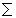 k > im PDT (yes |bi , bj , f1 , ... , fm ) | ||||
Let us extend the above to use a set of decision trees. As briefiy mentioned in Section 1, a number of infrequent and exceptional expressions appear in any natural language phenomena; they deteriorate the overall performance of application systems. It is also difficult for automated learning systems to detect and handle these expressions because exceptional expressions are placed in the same class as frequent ones. To tackle this difficulty, we generate a set of decision trees by adaboost (Freund and Schapire, 1996) algorithm illustrated in Table 2. The algorithm first sets the weights to 1 for all examples (2 in Table 2) and repeats the following two procedures T times (3 in Table 2).
| 1. | A decision tree is constructed by using the current weight vector ((a) in Table 2) | ||
| 2. | Example data are then parsed by using the tree and the weights of correctly handled examples are reduced ((b),(c) in Table 2) |
| |||||||||||||||||||||||||||
The final probability set hf is then computed by mixing T trees according to their performance (4 in Table 2). Using hf instead of PDT (yes |bi , bj , f1, ... , fm ), in equation (1) generates a boosting version of the dependency parser.
This section explains the concrete feature setting we used for learning. The feature set mainly focuses on the two bunsetsu constituting each data. The class set consists of binary values which delineate whether a sample (the two bunsetsu) have a modification relation or not. We use 13 features for the task, 10 directly from the 2 bunsetsu under consideration and 3 for other bunsetu information as summarized in Table 3.
| No. | Two Bunsetsu | No. | Others |
| 1 | lexical information of head word | 6 | distance between two bunsetsu |
| 2 | part-of-speech of head word | 7 | particle 'wa' between two bunsetsu |
| 3 | type of bunsetsu | 8 | punctuation between two bunsetsu |
| 4 | punctuation | ||
| 5 | parentheses |
Each bunsetsu (anterior and posterior) has the 5 features: No. 1 to No.5 in Table 3. Features No.6 to No.8 are related to bunsetsu pairs. Both No. 1 and No.2 concern the head word of the bunsetsu. No.1 takes values of frequent words or thesaurus categories (NLRI, 1964). No.2, on the other hand, takes values of part-of-speech tags. No.3 deals with bunsetsu types which consist of functional word chunks or the part-of-speech tags that dominate the bunsetsu's syntactic characteristics. No.4 and No.5 are binary features and correspond to punctuation and parentheses, respectively. No.6 represents how many bunsetsus exist between the two bunsetsus. Possible values are A(0), B(04) and C(>= 5), No.7. deals with the post-positional particle 'wa' which greatly influences the long distance dependency of subject-verb modifications. Finally, No.8 addresses the punctuation between the two bunsetsu. The detailed values of each feature type are summarized in Table 4.
| Values | |
| 2 | 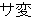 , , ,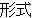 , , ,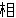 , , , , , , , , ,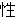 , , , , , , , , ,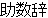 , ,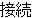 ,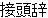 , , , , |
| 3 | , , 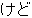 ,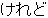 ,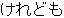 ,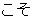 , , ,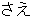 , , , ,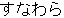 ,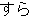 , , ,  , , , , , , 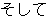 ,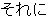 ,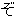 , ,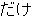 ,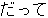 , , , ,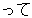 , , ,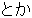 , , , , , 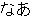 , , ,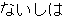 ,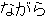 , , ,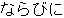 ,  , , 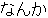 ,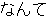 ,, 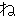 ,, 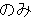 ,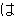 , , , ,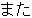 ,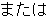 ,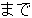 , , , , ,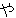 ,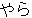 ,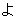 ,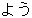 , , , ,  , , , , , , , , , , , , 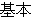 , ,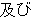 , ,
, , , , ,
, , , , 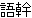 , , ,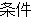 , , , , ., , , , , , , , , , , ,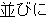 , ,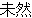 , , , , , , , ,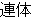 , , ,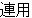 |
| 4 | non, , |
| 5 | non, ,  , , , , , , , , , , , , , , , , , , , , , , , , , , , , |
| 6 | A(0), B (14), C(5) |
| 7 | 0, 1 |
| 8 | 0, 1 |
We evaluated the proposed parser using the EDR Japanese annotated corpus (EDR, 1995). The experiment consisted of two parts. One evaluated the single-tree parser and the other the boosting counterpart. In the rest of this section, parsing accuracy refers only to precision; how many of the system's output are correct in terms of the annotated corpus. We do not show recall because we assume every bunsetsu modifies only one posterior bunsetsu. The features used for learning were non head-word features, (i.e., type 2 to 8 in Table 3). Section 4.1.4 investigates lexical information of head words such as frequent words and thesaurus categories. Before going into details of the experimental results, we summarize here how training and test data were selected.
| 1. | After all sentences in the EDR corpus were word-segmented and part-of-speech tagged (Matsumoto and others, 1996), they were then chunked into a sequence of bunsetsu. | ||
| 2. | All bunsetsu pairs were compared with EDR bracketing annotation (correct segmentations and modifications). If a sentence contained a pair inconsistent with the EDR annotation, the sentence was removed from the data. | ||
| 3. | All data examined (total number of sentences: 207802, total number of bunsetsu: 1790920) were divided into 20 files. The training data were same number of first sentences of the 20 files according to the training data size. Test data (10000 sentences) were the 2501th to 3000th sentences of each file. |
In the single tree experiments, we evaluated the following 4 properties of the new dependency parser.
Table 5 summarizes the parsing accuracy with various confidence levels of pruning. The number of training sentences was 10000.
| Confidence Level | 25% | 50% | 75% | 95% | |
| Parsing Accuracy | 82.01% | 83.43% | 83.52% | 83.35% |
In C4.5 programs, a larger value of confidence means weaker pruning and 25% is commonly used in various domains (Quinlan, 1993). Our experimental results show that 75% pruning attains the best performance, i.e. weaker pruning than usual. In the remaining single tree experiments, we used the 75% confidence level. Although strong pruning treats infrequent data as noise, parsing involves many exceptional and infrequent modifications as mentioned before. Our result means that only information included in small numbers of samples are useful for disambiguating the syntactic structure of sentences.
Table 6 and Figure 2 show how the number of training sentences influences parsing accuracy for the same 10000 test sentences. They illustrate the following two characteristics of the learning curve.
| 1. | The parsing accuracy rapidly rises up to 30000 sentences and converges at around 50000 sentences. | ||
| 2. | The maximum parsing accuracy is 84.33% at 50000 training sentences. |
| Number of Training Sentences | 3000 | 6000 | 10000 | 20000 | 30000 | 50000 | |
| Parsing Accuracy | 82.07% | 82.70% | 83.52% | 84.07% | 84.27% | 84.33% |
We will discuss the maximum accuracv of 84.33%. Compared to recent stochastic English parsers that yield 86 to 87% accuracy (Collins, 1996; Magerman, 1995), 84.33% seems unsatisfactory at the first glance. The main reason behind this lies in the difference between the two corpora used: Penn Treebaank (Marcus et al., 1993) and EDR corpus (EDR, 1995). Penn Treebank (Marcus et al., 1993) was also used to induce part-of-speech (POS) taggers because the corpus contains very precise and detailed POS markers as well as bracket annotations, In addition, English parsers incorporate the syntactic tags that are contained in the corpus. The EDR corpus, on the other hand, contains only coarse POS tags. We used another Japanese POS tagger (Matsumoto and others, 1996) to make use of well-grained information for disambiguating syntactic structures. Only the bracket information in the EDR corpus was considered. We conjecture that the difference between the parsing accuracies is due to the difference of the corpus information. (Fujio and Matsumoto, 1997) constructed an EDR-based dependency parser by using a similar method to Collins' (Collins, 1996). The parser attiained 80.48% accuracy. Although thier training and test sentences are not exactly same as ours, the result seems to support our conjecture on the data difference between EDR and Penn Treebank.
We will now summarize the significance of each non head-word feature introduced in Section 3. The influence of the lexical information of head words will be discussed in the next section. Table 7 illustrates how the parsing accuracy is reduced when each feature is removed. The number of training sentences was 10000. In the table, ant and post represent the anterior and the posterior bunsetsu, respectively.
Table 7 clearly demonstrates that the most significant features are anterior bunsetsu type and distance between the two bunsetsu. This result may partially support an often used heuristic; bunsetsu modification should be as short range as possible, provided the modification is syntactically possible. In particular, we need to concentrate on the types of bunsetsu to attain a higher level of accuracy. Most features contribute, to some extent, to the parsing performance. In our experiment, information on parentheses has no effect on the performance. The reason may be that EDR contains only a small number of parentheses. One exception in our features is anterior POS of head. We currently hypothesize that this drop of accuracy arises from two reasons.
| Feature | Accuracy Decrease | Feature | Accuracy Decrease | |
| ant POS of head |  0.07 % 0.07 % | post punctuation | 1.62 % | |
| ant bunsetsu type | 9.34 % | post parentheses | 0.00 % | |
| ant punctuation | 1.15 % | distance between two bunsetsus | 5.21 % | |
| ant parentheses | 0.00 % | punctuation between two bunsetsus | 0.01 % | |
| post POS of head | 2.13 % | 'wa' between two bunsetsus | 1.79 % | |
| post bunsetsu type | 0.52 % |
We focused on the head-word feature by testing the following 4 lexical sources. The first and the second are the 100 and 200 most frequent words, respectively. The third and the fourth are derived from a broadly used Japanese thesaurus, Word List by Semantic Principles (NLRI, 1964). Level 1 and Level 2 classify words into 15 and 67 categories, respectively.
| 1. | 100 most Frequent words | ||
| 2. | 200 most Frequent words | ||
| 3. | Word List Level 1 | ||
| 4. | Word List Level 2 |
Table 8 displays the parsing accuracy when each head word information was used in addition to the previous features. The number of training sentences was 10000. In aIl cases, the performance was worse than 83.52% which was attained without head word lexical information. More surprisingly, Inore head word information yielded worse performance. From this result, it may be safely said, at least for the Japanese language, that we cannot expect lexical information to always improve the performance. Further investigation of other thesaurus and clustering (Charniak, 1997) techniques is necessary to fully understand the influence of lexical information.
| Head Word Information | 100 words | 200 words | Level 1 | Level 2 | |
| Parsing Accuracy | 83.34% | 82.68% | 82.51% | 81.67% |
This section reports experimental results on the boosting version of our parser. In all experiments, pruning confidence levels were set to 55%. Table 9 and Figure 3 show the parsing accuracy when the number of training examples was increased. Because the number of iterations in each data set changed between 5 and 8, we will show the accuracy by combining the first 5 decision trees. In Figure 3, the dotted line plots the learning of the single tree case (identical to Figure 2) for reader's convenience. The characteristics of the boosting version can be summarized as follows compared to the single tree version.
| Number of Training Sentences | 3000 | 6000 | 10000 | 20000 | 30000 | 50000 | |
| Parsing Accuracy | 83.10% | 84.03% | 84.44% | 84.74% | 84.91% | 85.03% |
Next, we discuss how the number of iterations influences the parsing accuracy. Table 10 shows the parsing accuracy for various iteration numbers when 50000 sentences were used as training data. The results have two characteristics.
| Number of Iteration | 1 | 2 | 3 | 4 | 5 | 6 | |
| Parsing Accuracy | 84.32% | 84.93% | 84.89% | 84.86% | 85.03% | 85.01% |
We have described a new Japanese dependency parser that uses decision trees. First, we introduced the single tree parser to clarify the basic characteristics of our method. The experimental results show that it outperforms conventional stochastic parsers by 4%. Next, the boosting version of our parser was introduced. The promising results of the boosting parser can be summarized as follows.
We now plan to continue our research in two directions. One is to make our parser available to a broad range of researchers and to use their feedback to revise the features for learning. Second, we will apply our method to other languages, say English. Although we have focused on the Japanese language, it is straightforward to modify our parser to work with other languages.

 t = t/(1-t)
t = t/(1-t)